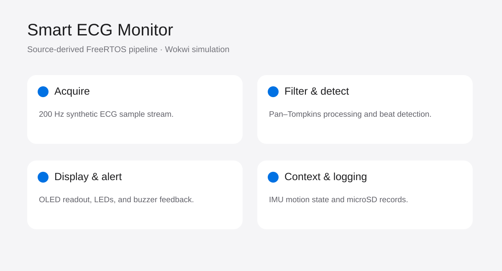

Smart ECG Monitor
ESP32 · ESP-IDF · FreeRTOS · Wokwi simulation
View project on GitHub ↗- Context
- Embedded signal-processing project
- Project status
- Synthetic ECG simulation
- Tools & methods
- ESP32 · FreeRTOS · Wokwi · C


A real-time signal pipeline
The simulator generates ECG-like signals using a McSharry dynamical model. A 200 Hz acquisition task feeds a queue; a filtering and detection task applies a Pan–Tompkins-style pipeline, identifies beats, and estimates heart rate from RR intervals.
Implemented in the supplied code
The firmware contains rule-based normal, tachycardia, bradycardia, and irregular-beat classifications; OLED display updates; LED and buzzer alerts; button handling; MPU6050 motion classification; and microSD logging. FreeRTOS tasks and queues separate acquisition, processing, display, and logging.
The archive is a simulation prototype, not a clinically validated monitor. Its older planning notes list features that changed over development, so the showcase follows the current source rather than treating every proposed peripheral as implemented.
Team
Kareem Mahmoud, Abdurrahman Maricar, and Mohamad Dabbagh · COE411 Embedded and Cyber-Physical Systems · Spring 2026.
From the source
static beat_class_t classify_beat(int bpm)
{
if (det.rr_count >= 3) {
uint64_t sum = 0;
for (int i = 0; i < det.rr_count; i++) sum += det.rr_ring[i];
uint32_t mean_rr = (uint32_t)(sum / (uint64_t)det.rr_count);
/* rr_head points to the next slot to write, so the most recently
* pushed RR sits at (rr_head - 1) mod RR_RING_LEN. */
int last_idx = (det.rr_head + RR_RING_LEN - 1) % RR_RING_LEN;
uint32_t last_rr = det.rr_ring[last_idx];
if (mean_rr > 0) {
uint32_t diff = (last_rr > mean_rr)
? (last_rr - mean_rr)
: (mean_rr - last_rr);
if ((diff * 100U) / mean_rr > 20U) {
return BEAT_IRREGULAR;
}
}
}
if (bpm > 100) return BEAT_TACHY;
if (bpm > 0 && bpm < 60) return BEAT_BRADY;
return BEAT_NORMAL;
}